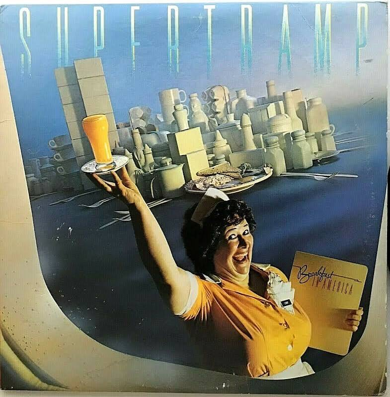
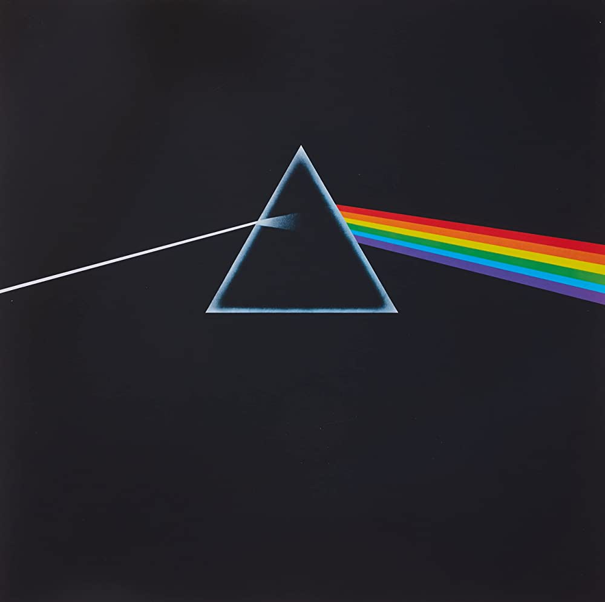

Here we have various albums all made within the time range of 1970-1979. By hovering over each album you will see their actual vinyl records. Click on the top of the vinyl records to hear a significant song from the given albums.

Breakfast in America Breakfast in America Album Supertramp

Breathe in the Air Dark Side of the Moon Album Pink Floyd